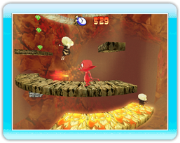

9 |
Jeu Principal |
 |
 Commencer une partie Dans le menu principal, sélectionnez « jeu principal » pour commencer une partie. Puis, sélectionnez « nouvelle partie », ou « charger une partie » pour continuer une partie.
Principe Le jeu débute dans le repaire de Cocoto, il devra se lancer à la poursuite des ravisseurs qui ont enlevé ses amis. Vous aurez alors à explorer 5 mondes aussi merveilleux que dangereux. Heureusement, Fairy vous aidera dans votre long voyage.
Actions
Courir Déplacez le Stick directionnel vers la droite ou vers la gauche.
Sauter Appuyez sur le bouton A pour faire un saut simple. Une fois dans les airs, appuyez de nouveau sur le bouton A pour effectuer un double saut !
Créer des arches de lave Cocoto peux créer des arches de lave à volonté ! Appuyez sur le bouton B pour créer une arche. Utilisez-les comme des ponts en montant dessus. Pour cela, déplacez le Stick directionnel vers la droite ou vers la gauche. Servez-vous des arches comme arme sur vos ennemis ! Vous pouvez aussi les détruire en sautant dessus et atteindre les ennemis situés plus bas !
Tirer des fourches Appuyez sur le bouton Z pour lancer des fourches sur vos ennemis ! Vous pourrez effectuer cette action même en plein air pour atteindre les ennemis volants par exemple !
Coup spécial Effectuez un mouvement rapide de la Télécommande Wii, lorsque vous êtes proche de vos ennemis, pour réaliser un coup spécial ! |
 |
 |
 |